Melanoma tumour thickness in Norway
An analysis of incidence and survival, 1983–2019
Raju Rimal
Department of Biostatistics
University of Oslo
24 November 2022
Research is what I’m doing when I don’t know what I’m doing.
Wernher von Braun (1912–1977)
A German-American physicist
Scientific research is one of the most exciting and rewarding of occupations.
Frederick Sanger (1918–2013)
An English biochemist with two Nobel Prize in Chemistry
What am I doing and why?
- Cutaneous melanoma (CM) is the most aggressive and lethal form of skin cancer.
- Increasing dramatically in fair skinned population.
- Norway is ranked fifth in incidence and third in mortality worldwide.
- It’s highly curable if caught early.
- Tumour thickness plays an important role
Outline
Background
Data and Methods
Incidence rate and trend
Perspectives
Research Objective
To study melanoma incidence and their trend by tumour thickness, overall and in important subgroups such as sex, age and anatomic sites, in a unique nationwide case series over a 35-year time period.
Background
Overall incidence and mortality in Norway
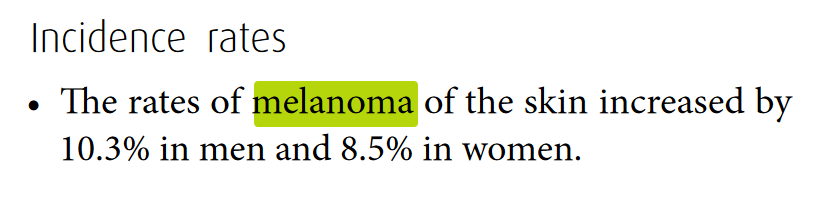 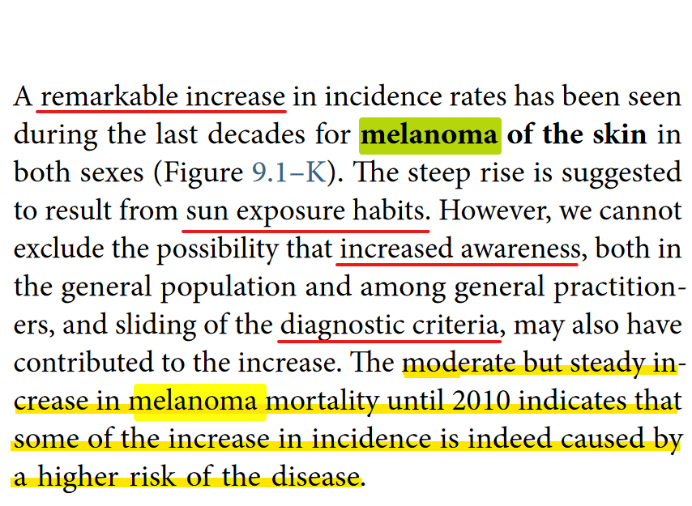
Data from Cancer Registry of Norway (CRN)
- Histologically verified data
- Tumour thickness recorded since 1980 are now digitized
- Melanoma registry established in 2008
- Here we will use data from 1983 to 2019
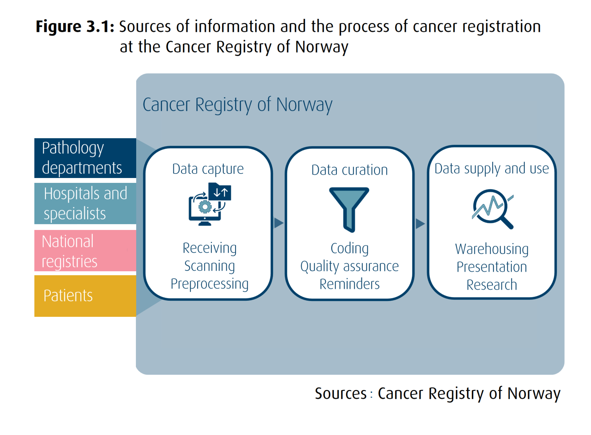
Melanoma and tumour thickness
T-categories
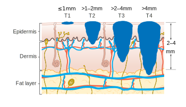Diagnosis, thickness pattern, and T categories
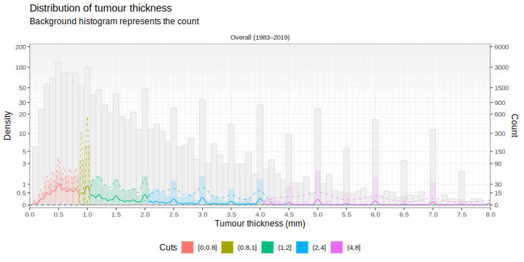
Data & Methods
Basic characteristics of data
Age at diagnosis
Age at diagnosis has increased in the recent period than earlier.
Basic characteristics of data
Tumour thickness
The thickness of tumour at diagnosis has decreased in the recent period than earlier.
Missing thickness and imputation
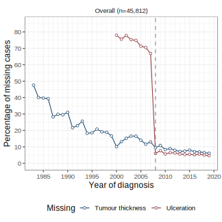
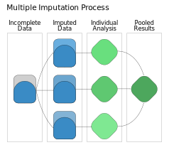
- 30 imputations
- Predictors: log-thickness, anatomic site, melanoma sub-type, age, sex, etc
Incidence rate, adjustment, and segmented regression
Incidence Rate
Age-adjustment
Segmented Regression
\[\mathcal{r} = \frac{\text{# melanoma patients}}{\text{# people at risk}}\]
Incidence rate, adjustment, and segmented regression
Incidence Rate
Age-adjustment
Segmented Regression
\[\mathcal{r}_a = \left[\sum_{i=1}^{a_k}\left(\mathcal{r}_i \times a_i^s\right)\right] \times 100,000\]
where,
\(\mathcal{r}_i\) = \(\mathcal{a}_i^s\) = |
incidence rate of age-group \(i\) prop. of standard population for age-group \(i\) |
Incidence rate, adjustment, and segmented regression
Incidence Rate
Age-adjustment
Segmented Regression
\[\log\left(\mathcal{r}_a\right)_k = \mathcal{f}\left(y_k\right) + \varepsilon\]
where,
\(y_k\) \(y_k\) |
= | \(\beta_1 y_k + \beta_2 \left(y_k - \psi\right)_+\) is the year \(k\) |
Results
Incidence over time
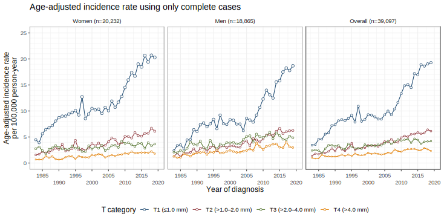 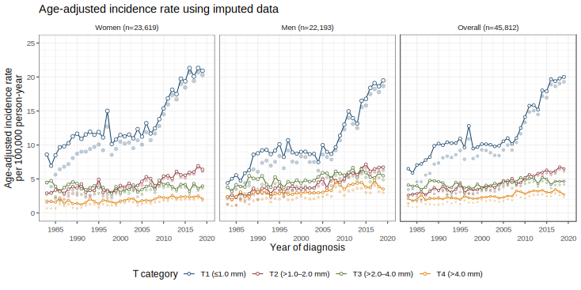 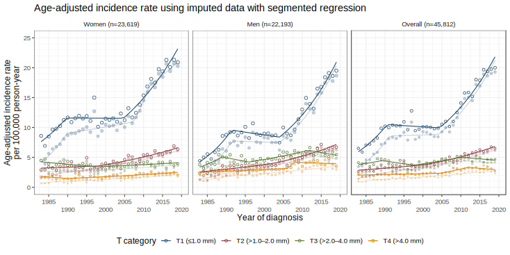 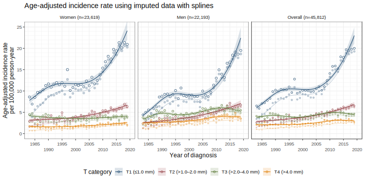
Imputed Data: Earlier periods have more missing cases. More missing leads to more imputation and raise in incidence.
Segmented Regression: Change point mainly in T1 was detected in early 90s and mid 2000s.
Trend: Added spline shows a clear plateau in T1. Sharp raise in incidence in the recent years mainly in thinner cases (T1 and T2).
Trend: T1 has largest and sharply incidence of all. (Table in next slide.)
Trend: Women have higher incidence in thin cases while men have higher incidence in thicker cases.
Changes in melanoma incidence rate
| Trend 1 | 1983–2019 | ||
|---|---|---|---|
| APC (95% CI) | Period | AAPC (95% CI) | |
| Women (n=23,619)1 | |||
| T1 (≤1.0 mm) | 6.4 (3.1, 9.9) | 1983–1989 | 3.1 (2.7, 3.5) |
| T2 (>1.0–2.0 mm) | 0.7 (-0.6, 2.0) | 1983–1997 | 2.0 (1.6, 2.5) |
| T3 (>2.0–4.0 mm) | -1.5 (-2.8, -0.1) | 1983–1997 | -0.1 (-0.5, 0.3) |
| T4 (>4.0 mm) | -2.8 (-6.6, 1.2) | 1983–1989 | 0.9 (0.4, 1.4) |
| Men (n=22,193)1 | |||
| T1 (≤1.0 mm) | 10.1 (7.5, 12.7) | 1983–1990 | 4.5 (4.1, 4.9) |
| T2 (>1.0–2.0 mm) | 2.3 (1.5, 3.1) | 1983–2002 | 2.9 (2.5, 3.3) |
| T3 (>2.0–4.0 mm) | 7.1 (3.1, 11.3) | 1983–1988 | 1.3 (0.8, 1.8) |
| T4 (>4.0 mm) | 1.0 (0.3, 1.7) | 1983–2005 | 1.3 (0.9, 1.7) |
| Trend refers to the segments separated by the join-points. | |||
| 1 Average number of cases over 30 imputations | |||
| Trend 2 | 1983–2019 | ||
|---|---|---|---|
| APC (95% CI) | Period | AAPC (95% CI) | |
| Women (n=23,619)1 | |||
| T1 (≤1.0 mm) | -0.0 (-1.0, 1.0) | 1990–2004 | 3.1 (2.7, 3.5) |
| T2 (>1.0–2.0 mm) | 3.0 (2.1, 3.9) | 1998–2019 | 2.0 (1.6, 2.5) |
| T3 (>2.0–4.0 mm) | 0.9 (-0.0, 1.7) | 1998–2019 | -0.1 (-0.5, 0.3) |
| T4 (>4.0 mm) | 1.8 (1.2, 2.4) | 1990–2019 | 0.9 (0.4, 1.4) |
| Men (n=22,193)1 | |||
| T1 (≤1.0 mm) | -1.0 (-2.4, 0.3) | 1991–2003 | 4.5 (4.1, 4.9) |
| T2 (>1.0–2.0 mm) | 3.6 (2.4, 4.9) | 2003–2019 | 2.9 (2.5, 3.3) |
| T3 (>2.0–4.0 mm) | -2.6 (-6.3, 1.2) | 1989–1995 | 1.3 (0.8, 1.8) |
| T4 (>4.0 mm) | 14.9 (-1.7, 34.2) | 2006–2007 | 1.3 (0.9, 1.7) |
| Trend refers to the segments separated by the join-points. | |||
| 1 Average number of cases over 30 imputations | |||
| Trend 3 | 1983–2019 | ||
|---|---|---|---|
| APC (95% CI) | Period | AAPC (95% CI) | |
| Women (n=23,619)1 | |||
| T1 (≤1.0 mm) | 5.0 (3.9, 6.1) | 2005–2019 | 3.1 (2.7, 3.5) |
| T2 (>1.0–2.0 mm) | - | - | 2.0 (1.6, 2.5) |
| T3 (>2.0–4.0 mm) | - | - | -0.1 (-0.5, 0.3) |
| T4 (>4.0 mm) | - | - | 0.9 (0.4, 1.4) |
| Men (n=22,193)1 | |||
| T1 (≤1.0 mm) | 6.3 (5.1, 7.5) | 2004–2019 | 4.5 (4.1, 4.9) |
| T2 (>1.0–2.0 mm) | - | - | 2.9 (2.5, 3.3) |
| T3 (>2.0–4.0 mm) | 2.5 (1.2, 3.7) | 1996–2011 | 1.3 (0.8, 1.8) |
| T4 (>4.0 mm) | -0.6 (-2.7, 1.5) | 2008–2019 | 1.3 (0.9, 1.7) |
| Trend refers to the segments separated by the join-points. | |||
| 1 Average number of cases over 30 imputations | |||
| Trend 4 | 1983–2019 | ||
|---|---|---|---|
| APC (95% CI) | Period | AAPC (95% CI) | |
| Women (n=23,619)1 | |||
| T1 (≤1.0 mm) | - | - | 3.1 (2.7, 3.5) |
| T2 (>1.0–2.0 mm) | - | - | 2.0 (1.6, 2.5) |
| T3 (>2.0–4.0 mm) | - | - | -0.1 (-0.5, 0.3) |
| T4 (>4.0 mm) | - | - | 0.9 (0.4, 1.4) |
| Men (n=22,193)1 | |||
| T1 (≤1.0 mm) | - | - | 4.5 (4.1, 4.9) |
| T2 (>1.0–2.0 mm) | - | - | 2.9 (2.5, 3.3) |
| T3 (>2.0–4.0 mm) | -1.9 (-5.0, 1.2) | 2012–2019 | 1.3 (0.8, 1.8) |
| T4 (>4.0 mm) | - | - | 1.3 (0.9, 1.7) |
| Trend refers to the segments separated by the join-points. | |||
| 1 Average number of cases over 30 imputations | |||
Incidence rate by anatomic site
Incidence rate by melanoma sub-type
Incidence by age, period of diagnosis and cohort
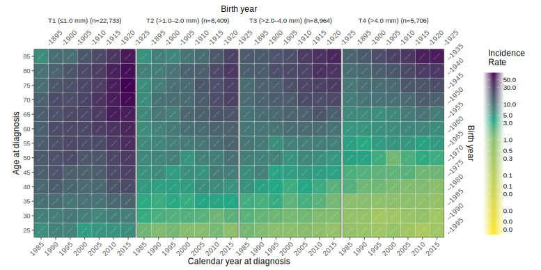
Wrap-up
Further study
Upcoming study
- Cut-point analysis
-
The cut-points are important criteria for risk assessment, diagnosis and follow-up
- Survival
-
Survival by tumour thickess gives more clear explanation on both the increase in incidence and high mortality in Norway due to melanoma
Need more exploration
- Plateau
-
Reason behind the plateau is still unknown and further study is required.
Summary
- Awareness may have contributed to the rapid raise in melanoma incidence.
- Overdiagnosis may be considered but unable to explain the increase in thicker cases.
- Awareness focused on elderly males may be effective for early detection.
- Both long-term and short term effect may be the reason behind the plateau.
- Change in diagnosis practices, life-style, awareness may be the reason. More data and simulation studies is required.
Collaborators


Coauthors
Raju Rimal

Trude E Robsahm
Adele Green

Reza Ghiasvand
Corina S Rueegg
Assia Bassarova
Petter Gjersvik

Elisabete Weiderpass

Odd O Aalen

Bjørn Møller

Marit B Veierød
Funded by: The Research Council of Norway.
Complete Cases: only used cases with non-missing thumour thickness